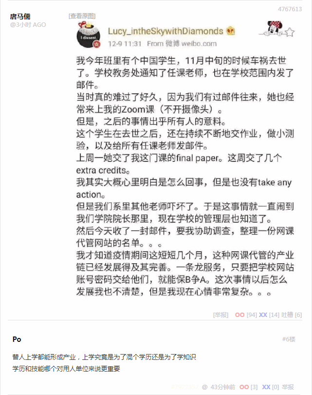

“人类全然堕落败坏，无以复加……”伊玛目表情呆滞，口中念念有词，“没什么自由意志，中央已经钦定了……”
“拉比……”清真寺学习行走轻声提醒，没想到方丈看了论文之后有这么大反应。
“说过你多少遍了，上班的时候叫我阿呆！”伊玛目忽然清醒过来，然后把手中期刊向前翻了几页，找到论文标题下面的署名，咬牙切齿，“好！很有精神！你的名字？魏尔斯特拉斯！我记住了！”
“阿呆……”清真寺学习行走提醒，“时间快到了，外面的奴才都等着您领衔磕头呢”。
“是阿……阿訇！”伊玛目纠正，清晰响亮的发出鼻音，不小心带出两坨鼻涕来，赶紧抓起手帕擦拭标志性的鹰钩鼻子①，“我知道了，你先把罗盘端出去”。
清真寺学习行走应声称是，抱着香炉迈着正步走了。
“处处连续处处不可导……”，伊玛目站起来走了几步，忽然眼前一亮，“对呀，素质低下，性格卑劣，没有任何闪光点……反而印证了教义嘛”。
“哎！”伊玛目三步并作一步走冲向书桌的时候，步子太大扯到蛋了，赶紧伸手揉揉裤裆，缓解尊贵的鸡巴之肿痛感，背诵祖训，“哈希姆之苗裔兮，朕皇考曰阿里”。
“阿訇……”清真寺学习行走掀开挂毯探头提醒。
“这就去”，伊玛目抓起笔潦草的记录刚才的神学灵感，然后整理仪容准备出门登坛作法，嘴里不停嘟囔，“市面上这帮马瓦力，甚至还有起哄架秧子的卡菲勒，满口‘马爸爸马爸爸’的吆喝②，真特么以为自己跟世宗哀皇帝是平辈吖”。
“麦加在哪里呀麦加在哪里？麦加就在色目人的心坎里！”清真寺学习行走，或者说实习助祭，一边哼着小曲一边调整罗盘，香炉上面悬浮的模糊影像，指明了此时此刻的正确方位，“最近的随机游走越来越奇葩了……”
“阿拉胡……阿克巴！”免冠徒跣的伊玛目高呼革命口号，以头抢地。
“阿拉胡……阿克巴！”伊玛目屁股后面大批奴才齐声跟诵，纳头便拜。
“阿胡拉……马自达……”伊玛目紧贴着地毯的嘴唇，配合群众大合唱的节奏，无声的念诵这个名字。
“我休了你，我休了你，我休了你”，清真寺学习行走蹲在猫砂盆上，伸手抓起一把沙子擦拭闪耀着金属光泽的吱～，嘴里念念有词，“重要的事情说三遍”。
床上的女人没有任何反应。
“我宣布，婚姻关系正式结束”，伊玛目严肃的说，“以后也不可复合了”。
“反正也玩腻歪了”，清真寺学习行走毫不在乎，裹好兜裆布，看着床上的女人，“抱歉，有錢是真的能為所欲為的我们无法一起学习③”。
“你的进步速度超乎想象”，伊玛目赞许的说，“接下来就是最后的毕业设计和答辩了”。
“终于能当上清真寺行走了”，清真寺学习行走跃跃欲试，“您说吧，我这就去准备开题报告”。
“别高兴得太早”，伊玛目泼冷水，“红白喜事可不是那么简单，即便把《古兰经》《圣训》背得滚瓜烂熟也没用”。
“还能有什么花活？”清真寺学习行走不以为然，“就是唢呐十级我也考过了”。
“此去泉台招旧部，旌旗十万斩阎罗”，伊玛目念了两句诗，“你需要独立主持一场冥婚”。
“冥婚？”清真寺学习行走第一次听说这个概念，“打穿哲罕南七重门还能带着营妓？”
“所以说你高兴得太早了”，伊玛目慈祥的说，“读完本科就以为自己无所不知了，别忘了上面还有略有所知的硕士和一无所知的博士”。
“您说吧”，清真寺学习行走自信心爆棚，“一定多快好省坚决完成任务”。
“先把‘湿货’准备好”，伊玛目伸手一指床上的女人，“宰了！”
“投名状不是已经交过了么？”清真寺学习行走有些犹豫，“一日夫妻百日恩，虽然离婚了吧，但是……”
“一块抹布一张卫生纸都有它的价值，倒腾啥都不如倒腾女人挣钱，活的死的都挣，还没成本”，伊玛目抽出大马士革弯刀递给清真寺学习行走，“等啥呢？麻利儿的！属算盘子的是不是？非得拨一拨才肯动一动？男方家属已经不耐烦了”。
“要不……您先示范一遍”，清真寺学习行走忽然变身缩卵怂货窝囊废，“我来念苔丝米耶”。
“嗤，翅膀硬了吖？”伊玛目忽然把脸一板，“敢跟师傅顶嘴了？”
“师父，徒儿知错了”，清真寺学习行走抱着脑袋满地打滚，漆黑的大胡子乱作一团，“我还是个孩子吖……④”
“知道就好”，伊玛目停止念诵紧箍咒，看着清真寺学习行走坐起来喘气，再一次把刀递过来，“以普慈特慈的真主之尊命……”
“阿拉胡阿克巴！”清真寺学习行走咬紧牙关，手起刀落，划过女人咽喉。
“赶紧收拾一下”，伊玛目指示，“该上路了”。
清真寺学习行走脸色晦暗，默默的把尸体用白布裹好捆结实，扛在肩上，随着伊玛目走出后门，放在门口骆驼背上。
到了地头，伊玛目说什么，清真寺学习行走就做什么，看着各种奇怪的纹章法器也按捺住好奇心，一言不发。
“都夸你说的比唱的还好听”，伊玛目讽刺，“现在该你唱了”。
“送战友，踏征程”，清真寺学习行走纵声高歌，声音有些颤抖，“默默无语两眼泪，耳边响起驼～～～铃～～～声……”
“搞定收工”，伊玛目一锤定音，现场的气氛一下子从庄严肃穆变成欢乐喜庆，除了清真寺学习行走。
“花椒呢？”一帮人把骆驼放倒剥皮切肉，燃起熊熊的篝火，准备野炊。
“孜然也凑活了，刀子和盐倒是猜对了”，有人搭茬，“那马瓦力还敢顶嘴‘只有一个骆驼，死了也不去，要罚就罚’⑤，那就罚他死了呗，咱家少爷又多了个奴才”。
“您不吃？”清真寺学习行走心里难受没胃口吃，看伊玛目明明心情舒畅却也在冷眼旁观，忍不住问了一句。
“不吃”，伊玛目回答，然后补充，“以后你也不能吃了”。
清真寺学习行走知趣的没有追问为什么，跟着伊玛目走回来，领了清真寺行走上岗证之后，下班回家去了。
伊玛目走进书房，盘腿坐在座钟旁边，掀动机关。
“那孩子表现怎么样？”座钟里发出低微但是清晰的声音。
“还行，很快就调整过来了”，伊玛目回答，“比预想的过程要顺畅”。
“那是”，声音有些得意，“谢里夫的家学渊源”。
“赛义德也不差嘛”，伊玛目想起自己当年的表现，确实相比后浪有些逊色。
“既然他能上岗，最近先让他顶班”，座钟发表指示，“需要你去调查一件事”。
“什么事？”伊玛目有些心不在焉，语气敷衍。
“利雅得的那个蛙蛤怖，最近又不消停了”，座钟说，“自称是鸦鸽怖私生子的后裔”。
“那又怎样？”伊玛目反问，“难道诺亚方舟又加印了一万两千张站票？”
“就是因为不知道才需要调查”，座钟说，“这事那孩子还干不了”。
“本来就应该轮到谢里夫了”，伊玛目明显在推诿工作，“也是你们离得近”。
“你是不是对组织安排的工作有些意见？”座钟调门高起来了。
“算是临盆综合症嘛”，伊玛目口气软化，开始自嘲，“去年百鬼夜行就没赶上”。
“你不觉得专挑这个时候搞事，不是偶然是必然么？”座钟提醒。
“连‘十九年七闰’都不知道的傻哔绿人，连‘十二时辰’都不会数”，伊玛目嘲讽，“还能凑准日子肯定是有高人指点”。
“想知道的就是这个高人是谁”，座钟语气严厉，“等啥呢？麻利儿的！属算盘子的是不是？非得拨一拨才肯动一动？组织已经不耐烦了”。
“要不……您先示范一遍”，伊玛目忽然变身缩卵怂货窝囊废，“我来学习观摩”。
“嗤，翅膀硬了吖？”座钟语气强硬，“敢跟师傅顶嘴了？”
“师父，徒儿知错了”，伊玛目抱着脑袋满地打滚，花白的大胡子乱作一团，“我还是个孩子吖……④”
“太阳出来啰喂喜洋洋啰，挑起扁担进市场咯”，清真寺行走高亢的嗓音响彻云霄，新的穆安津还没到，自己还得继续兼任，“只要我们多勤快，不愁吃来不愁穿咯”。
一曲《晨礼》唱罢，清真寺行走意犹未尽。伊玛目最近出差，头上没有领导管着，果然心情舒畅。走下宣礼塔，看见满面倦容的巡游者刚下夜班准备回来睡觉，都不忘凑过去乐呵呵的嘘寒问暖，“早安，打更人”。
“无聊啊⑥”，清真寺行走嘟囔，在屋里坐立不安，平时都被伊玛目指使干这干那，忙活得团团转脚打后脑勺，现在自己当家作主，忽然不知道该干嘛了，“闲得慌”。
“嘿嘿嘿”，清真寺行走抓起烟袋锅，塞进古巴烟丝，点燃之后，狠狠抽了一口，“绿皮书上没来及写禁烟，真是万幸”。
未完待续
-
① 

② 

- ③

- ④
 

无关人种、肤色、语言、信仰、阶级……的普世价值 

家学渊源和/或师门嫡传 - ⑤ “这次去驮盐的牲口，准得剥皮吃肉，要带着刀子、盐、花椒去。我只有一个驴，死了也不去，要罚就罚。”——安定县老百姓1941年7月
- ⑥